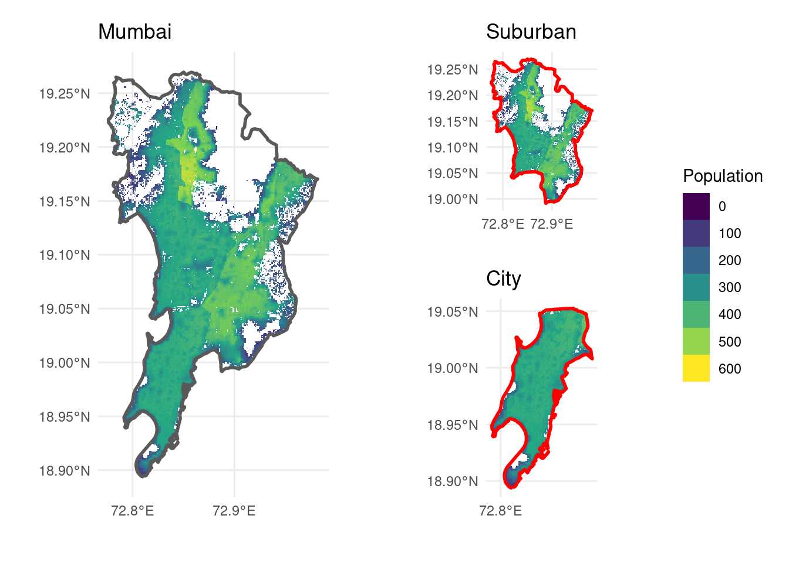
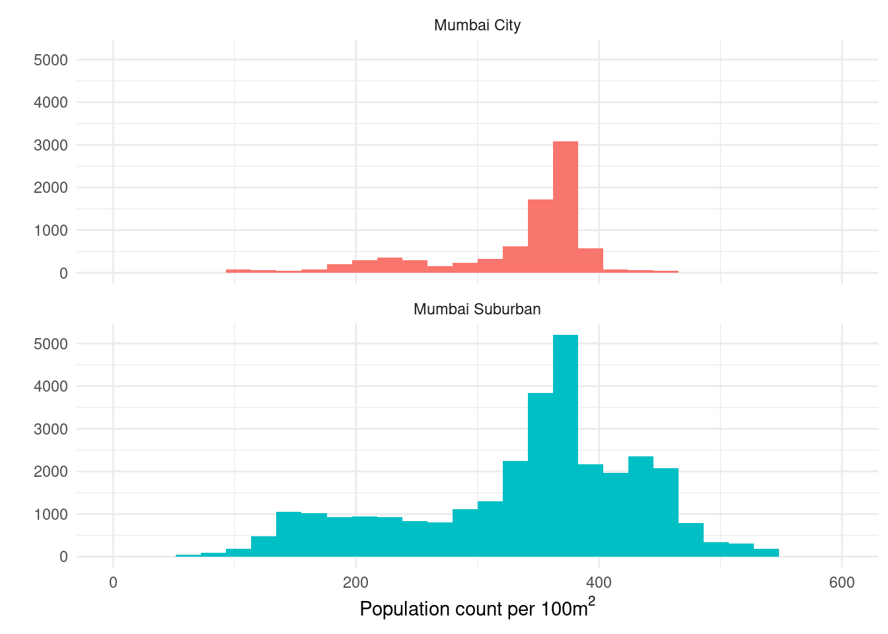

1 People
In 2022 Mumbai is supposedly a roaring megacity of around 18-25 million people Demographia (2022). Sadly, even a simple population count is difficult since the last census was in 2011and due to the pandemic it’s unclear whether the 2021 census has even happened. Ten years ago, the recorded population of the Mumbai metropolitan region was 18.4M while the island city recorded 12.4M - with 9.4 M in Mumbai suburban and 3.1M in Mumbai City. The remaining population is across the cities in the wider region including Navi Mumbai where I grew up.
My attempts to find a more recent, spatially distributed estimates for the island city (rather than the metropolitan region) led me to the Worldpop estimations (@SpatialDistributionPopulatin). The latest estimate for 2020, using some clever models and adjustments to UN values, indicates 14.5M people living in Mumbai.
The worldpop estimates even provide population counts at a 100m\(^2\) spatial resolution. Cropping the estimates to the two zones in the island city shows some useful spatial patterns that I would like to use with some neighbourhood-level building footprint analysis.

Flattening the spatial population distribution reveals modalities as an overall pattern. In Mumbai City, the older southern part of the island, there are two distinct types of areas: those with population counts of ~250 people /100m\(^2\) and those with 50% more density ~375 people / 100m\(^2\). The larger zone of Mumbai suburban is more varied containing up to 4 modes - 2 in addition to the ones in Mumbai city.
Whether these modes relate to specific urban typologies or if they are an artefact of the population count derivation model is still to be understand. Likely it is both. The population counts are derived from an approximate typology.

The city bustles in some way every second of the day - rhythms rising, fading, cresting to a manic frenzy or just a staccato march. The beat of the place is bound to the people but the people too are constrained to their place. 20 million people squashed into an area just three quarters the area of New York city resulting in a crush of 20,000 people into one square kilometer. To put that into a realistic terms TODO - find one!